Velkomin á Bílaheiminn minn!
Velkomin á vefsíðuna mína, staður þar sem við fögnum öllu sem tengist bílum! Hvort sem það er hljóðið úr vélinni, glæsilegur hönnun, eða spennan við hraðann, þá er eitthvað töfrandi við bíla. Ég elska bílamenningu, verkfræði, kraftinn, og viðburði eins og Formúlu 1, Heimsmeistaramót í rallakstri, og driftkeppnir. Ég er enn að læra, en mér finnst allt við bíla vera skemmtilegt, frá tjúningu til keppna, og frá klassískum bílum til ofurbíla.
Tegundir kappaksturs og af hverju eru þær svona vinsælar?
Kappakstur er einn af mest spennandi íþróttum heims. Hér eru nokkrar vinsælar tegundir:
Formúla 1: 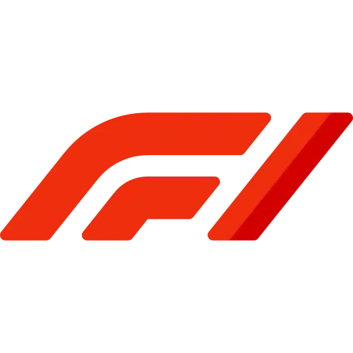oft kölluð F1, er hápunktur mótorsportsins, alþjóðlegt kappakstursmeistaramót þar sem hraðskreiðustu ökumenn heims keppa í nýjustu bílum smíðaðir af úrvalsliðum. Þetta snýst ekki bara um hraða; þetta er blanda af hörkukeppni, háþróaðri verkfræði, stefnumótun og alþjóðlegu sjónarspili. Hvert tímabil inniheldur röð keppna sem kallast Grand Prix, haldnar á brautum um allan heim, allt frá borgargötum til sögulegra brauta. Ökumenn berjast um stig til að vinna heimsmeistaratitilinn, á meðan lið keppa um titilinn í bílsmiðum. F1 er þar sem tækni mætir adrenalíni og hver keppni er blanda af dramatík, nákvæmni og ástríðu. [F1]
Rallý: 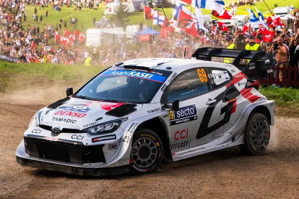er mótorsport þar sem ökumenn og aðstoðarökumenn keppa um að ljúka röð sérleiða á fyrirfram ákveðinni braut, sem getur verið almenningsvegir, skógarslóðir eða annað utan vega, á sem hraðastan tíma. Þetta er liðsíþrótt sem byggir á leiðsögufærni aðstoðarökumannsins, sem og hæfni ökumannsins til að takast á við mismunandi undirlag og aðstæður, jafnframt því að vera hraður og þolinn. [Wiki]
NASCAR: 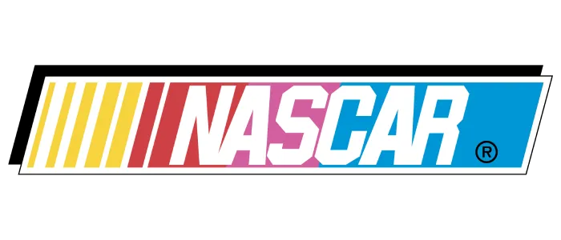er bandarískt fyrirtæki sem heimilar og rekur kappakstursviðburði með kappakstursbílum. Það er ein af fremstu mótorsportgreinum heims og stærsta áhorfendahópur, þekkt fyrir hraðskreiða kappakstur á sporöskjulaga brautum, götubrautum og götubrautum um allt land og á alþjóðavettvangi. [Wiki]
Street racing: 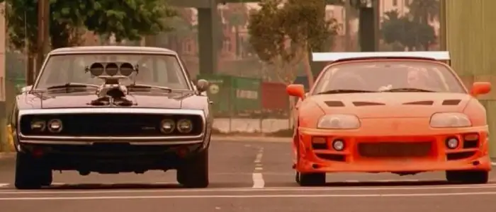götukappakstur er ólögleg keppni ökutækja á háum hraða á almenningsvegum, frekar en á tilgreindri kappakstursbraut. Þetta felur í sér að eitt eða fleiri ökutæki keppa í tilraun til að ná fjarlægð frá öðrum, oft skipulagt óformlega á eyðilegum svæðum eða vinsælum samkomustöðum. Þessi iðja er hættuleg vegna skorts á öryggisráðstöfunum og getur leitt til alvarlegra refsinga.
Af hverju er þetta skemmtilegt? Það er adrenalínið, keppnin, tæknin, og samfélagið sem gerir þetta svo spennandi.
Bílamerki og þeirra þekktustu bílar
Það er engin nákvæm tala um bílamerki því greinin er alltaf að breytast, ný vörumerki koma fram og gömul hverfa eða sameinast. Hins vegar eru yfir 100 helstu vörumerki starfandi um allan heim. Meðal þeirra vinsælustu eru:

Toyota Supra mk4
Toyota ->þekkt fyrir að framleiða áreiðanlega, hágæða og endingargóða bíla sem halda verðgildi sínu vel.
Volkswagen Golf GTI
Volkswagen ->þekkt fyrir framúrskarandi þýska verkfræði, helgimynda gerðir eins og Beetle og Golf og orðspor fyrir gæði og áreiðanleika.
Hyundai i30N
Hyundai ->býður upp á fjölbreytt úrval ökutækja með sterku orðspori fyrir gæði, áreiðanleika og staðalbúnað á aðgengilegu verði.
Honda Integra GSR
Honda ->þekkt fyrir að framleiða áreiðanlega, endingargóða og sparneytna bíla í fjölbreyttum gerðum. Það er einnig þekkt fyrir afkastamiklar vélar og sögu farsælla mótorsporta og kappaksturs.
Nissan Skyline GTR R34
Nissan ->þekkt fyrir nýsköpun sína, áreiðanleika og frammistöðu og hefur alþjóðlegt orðspor fyrir framleiðslu á fjölbreyttum ökutækjum.
Mercedes 190 Evo
Mercedes-Benz ->þekkt fyrir lúxus, frammistöðu og nýsköpun í bílaiðnaðinum og framleiðir fjölbreytt úrval ökutækja, allt frá lúxusfólksbílum og sendibílum til vörubíla og rúta.

BMW M3 E30
BMW ->þekkt fyrir að framleiða lúxusbíla og mótorhjól sem eru þekkt fyrir afköst, hágæða verkfræði og nýstárlega tækni.
Audi Quattro
Audi ->þekkt fyrir lúxusbíla sína með háum frammistöðum, sem sameina sportlega hönnun og háþróaða tækni. Vörumerkið er sérstaklega þekkt fyrir Quattro fjórhjóladrifskerfið sitt.
Ford Focus RS MK3
Ford ->þekkt fyrir að gjörbylta fjöldaframleiðslu með samsetningarlínunni, sem gerði bílinn aðgengilegan millistéttinni, byrjandi með Model T.
Chevrolet Corvette C6
Chevrolet ->þekkt fyrir að framleiða fjölbreytt úrval hagkvæmra ökutækja, þar á meðal vörubíla og jeppa, og fyrir helgimynda sportbíla eins og Corvette.
Meðal bíla sem hafa verið nefndir eru Volvo, Mazda, Mitsubishi, Subaru, Skoda, Aston Martin, Saab, Alfa Romeo, Renault og fleiri. Ofurbílamerki eins og Ferrari, Lamborghini, McLaren, Porsche, Bugatti, Koenigsegg og Pagani.
Hvert vörumerki hefur sína eigin sérstöðu, sögu og sérstöðu. [Wiki]
Tjúning bíla, hvað er það og af hverju er það skemmtilegt?
Bílatjúning er ferlið við að breyta bíl til að bæta frammistöðu hans, útlit eða aksturseiginleika. Þetta getur falið í sér breytingar á vél, fjöðrun, útblæstri, rafeindabúnaði og jafnvel útliti og innréttingu bílsins.
Tegundir tjúnings:
Afkastatjúning: Auka afl, hröðun og hámarkshraða bílsins með því að setja upp túrbó, yfirþrýstingskerfi eða uppfæra ECU tölvuna.
Fjöðrunartjúning: Bæta meðhöndlun og stöðugleika bílsins með því að setja upp íþróttafjöðrun, lækka bílinn eða bæta við stífari stýrisbúnaði.
Útlitstjúning: Breyta útliti bílsins með því að bæta við nýjum felgum, breiðari dekkjum, límmiðum, nýjum málningu eða loftflæði.
Hljóðtjúning:Breyta útblæstri til að fá sérstakt hljóð, allt frá djúpum drunum til hárra öskra. [Bilstein]
Af hverju er þetta skemmtilegt?
Tjúning bíla er skemmtilegur vegna þess að hann leyfir bíláhugamönnum að sérsníða og bæta bílana sína eftir eigin smekk og þörfum. Það er leið til að sýna persónuleika, bæta frammistöðu og taka þátt í samfélagi fólks með svipaða áhuga. Það getur verið skapandi og tæknilegt verkefni sem veitir ánægju og stolt þegar breytingarnar eru fullgerðar.
Hvort sem þú elskar hraða, útlit, eða hljóð, þá er tjúning leið til að gera bílinn að þínum eigin.
Bílapartar útskýrðir, hvað gerir bílinn betri í akstri?
Bílar eru flókin tæki með þúsundir hluta sem vinna saman. Hér útskýrum við mikilvægustu hlutana, sérstaklega þá sem hafa áhrif á afköst, hraða, akstur og hljóð.
Vélin
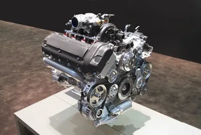Hjarta bílsins. Hún breytir eldsneyti í vélræna orku til að knýja bílinn áfram.
4 strokka vél: Létt, sparneytin, algeng í minni bílum. Minna afl en betri sparnaður.
6 strokka (V6): Jafnvægi milli afkasta og sparnaðar. Algeng í sportlegum fólksbílum og jeppum.
8 strokka (V8): Meira afl og tog. Algengt í kraftmiklum bílum og vörubílum.
12 strokka (V12): Mjög öflug vél, oft í ofurbílum. Mjög slétt og kraftmikil, en eyðir miklu.
Túrbó

Notar útblástursgas til að snúa túrbínu sem þrýstir meira lofti inn í vélina. Meira loft = meira eldsneyti = meira afl.
Kostir: Meira afl án þess að stækka vélina.
Gallar: Seinkun á afli (túrbó töf), meiri hiti og viðhald.
Yfirþrýstingskerfi (Supercharger)
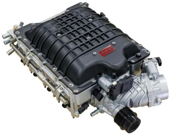Líkt og túrbó, en knúið af vélinni sjálfri. Gefur strax aukið afl.
Kostir: Engin töf, skjót viðbrögð.
Gallar: Meiri eldsneytiseyðsla og álag á vélina.
Fjöðrunarkerfi
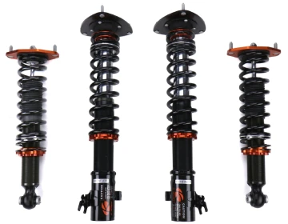Inniheldur gormar, dempara og tengibúnað. Heldur bílnum stöðugum og þægilegum í akstri.
Afkastafjöðrun: Harðari fjöðrun fyrir betri stjórn og beygjur.
Lækkuð fjöðrun: Betri loftmótstaða og grip.
Útblásturskerfi
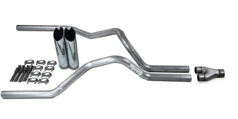Stýrir útblæstri frá vélinni og getur dregið úr hávaða.
Afkastakerfi: Betri loftflæði, minna viðnám og betra hljóð.
Hljóðdempandi kerfi: Minnkar hávaða, betra fyrir borgarakstur.
Kalt loftinntak
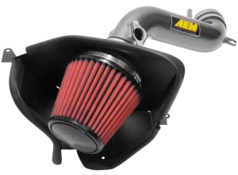Skiptir út venjulegu loftinntaki fyrir kerfi sem dregur inn kaldara loft.
Ávinningur: Kaldara loft = betri bruni = meira afl og betri nýting.
Kostir: Kaldara loft er þéttara, sem bætir afköst vélarinnar.
Gallar: Getur verið háværara og dregið inn vatn í rigningu.
ECU Tjúning (Vélarstýring)

ECU stjórnar eldsneytisgjöf, kveikjutíma o.fl. Með tjúningu má auka afl eða bæta sparnað.
Sérsniðnar stillingar: Hægt að stilla fyrir kappakstur, sparnað eða betri viðbrögð.
Bremsur
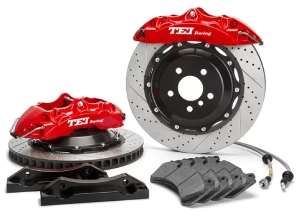Mikilvægur hluti fyrir öryggi og afköst.
Afkastabremsur: Stærri diskar og betri púðar fyrir öflugri hemlun.
Allra ára tíma dekk: Henta fyrir mismunandi veður, en ekki sérhæfð.
Gírskipting
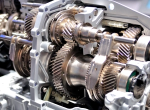Flytur afl frá vélinni til hjólanna.
Beinskipting vs. sjálfskipting: Beinskipting gefur meiri stjórn; sjálfskipting er auðveldari í notkun.
Tvöföld kúplingsgírskipting (DCT): Bjóða upp á eldingarhraðar gírskiptingar, frábært fyrir afkastamikla akstur.
Gúmmídekk
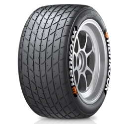Eina sem snertir veginn.
Afkastadekk: Betra grip og stýring, sérstaklega í þurru veðri.
Allra ára tíma dekk: Henta fyrir mismunandi veður, en ekki sérhæfð.
Af hverju skiptir þetta máli?
Að skilja hvernig bíllinn virkar hjálpar þér að taka betri ákvarðanir um kaup, viðhald og breytingar. Hvort sem þú elskar hraða, þægindi, eða útlit, þá gerir þessi þekking bílreiðina skemmtilegri og persónulegri.
Hættur við tjúning og kappakstur
Tjúning og kappakstur geta verið spennandi, en fylgja alvarlegar áhættur.
- Hættur við tjúning:
-
Röng tjúning getur skemmt vél, bremsur eða fjöðrun.
Hún getur fellt niður ábyrgð og hækkað tryggingar
Sum búnaður er ólöglegur og getur valdið sektum.
- Hættur við kappakstur:
-
Götukappakstur er ólöglegur og mjög hættulegur.
Hann getur valdið slysum, meiðslum eða dauða.
Löglegar afleiðingar eru sektir, svipting ökuréttar og upptaka bíls.
Það er mikilvægt að vera meðvitaður um þessar áhættur og taka upplýstar ákvarðanir. Ef þú ákveður að taka þátt í tjúningu eða kappakstri, gerðu það á öruggan og löglegan hátt, t.d. á viðurkenndum brautum eða viðburðum.